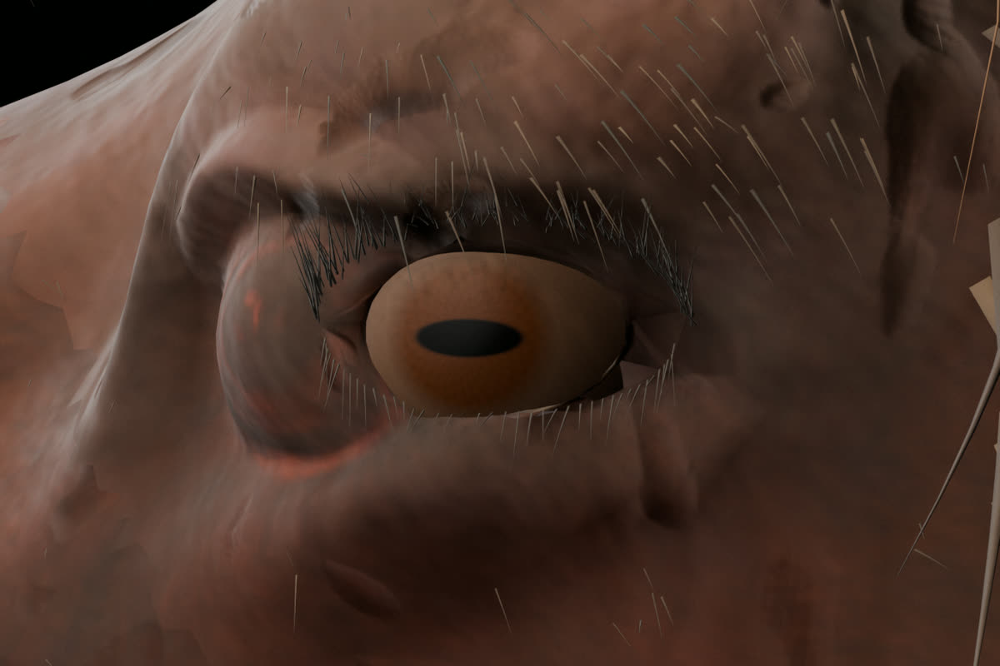
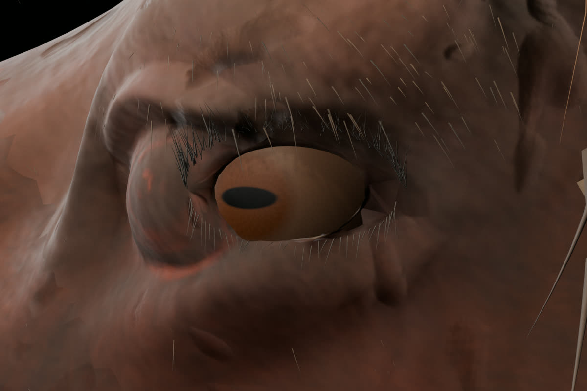
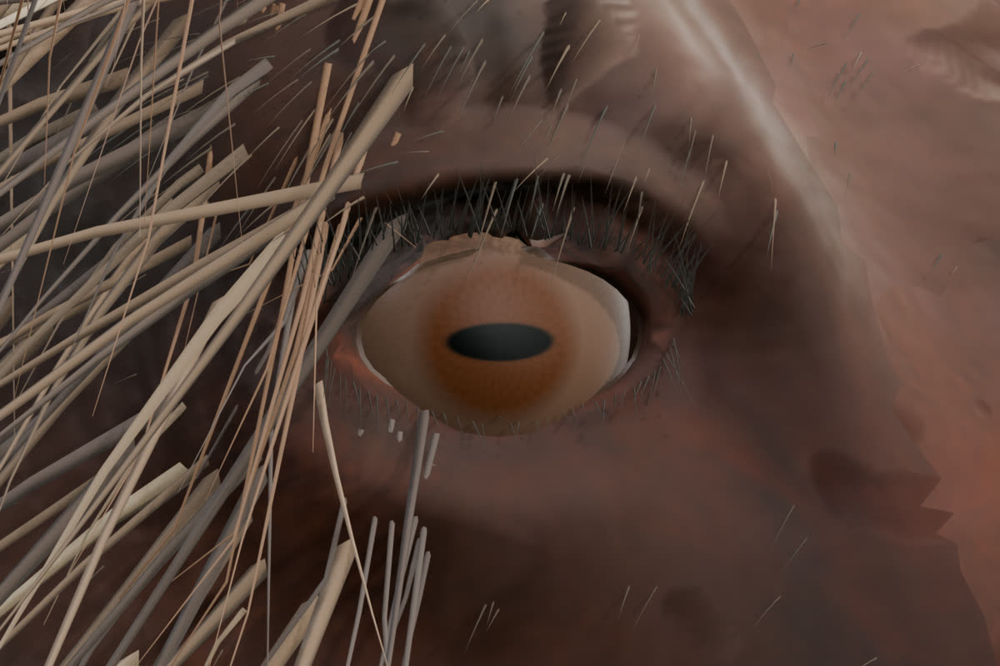
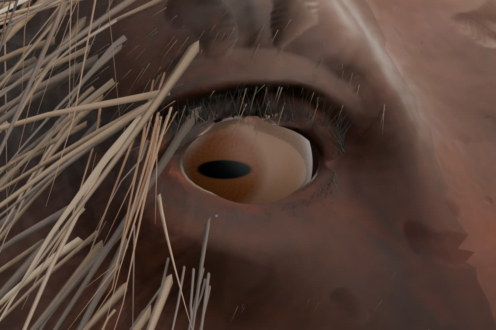
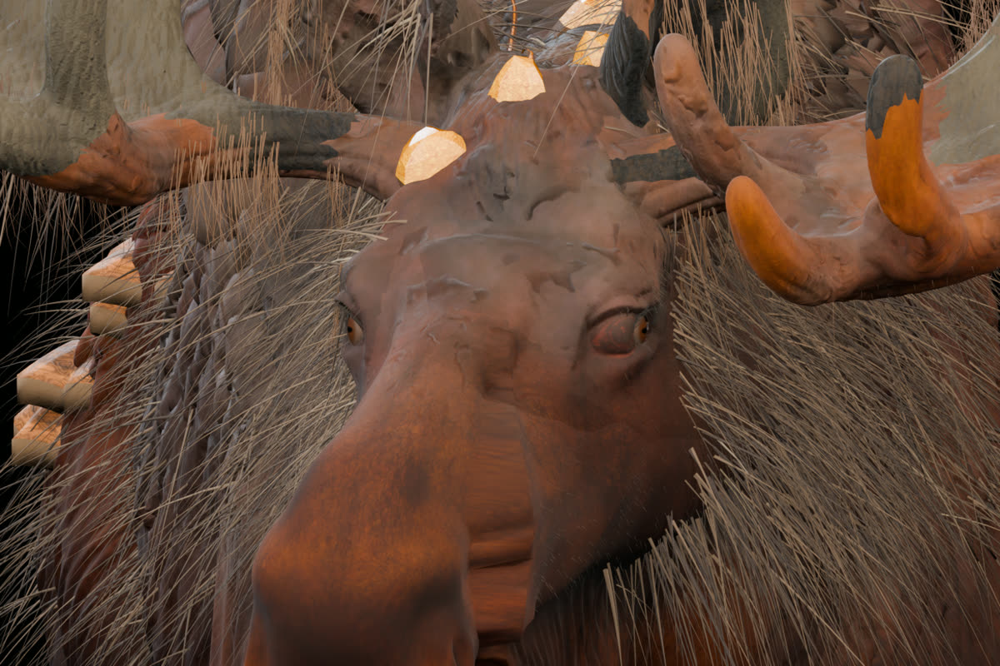

GUSTAVA ZONA 2040 / FOREST MOOSE / BLENDER
Лось V32K — исправление век и синхронизации
Здесь показаны настоящие рендеры 3D-модели из Blender. Убраны дополнительные висящие кромки век; исправлены участки геометрии у правого угла глаза и левого верхнего века. Оба глаза используют один Blender Action. Их повороты проверены на каждом из 60 кадров. Не концепт и не генерация картинки.
ЛЕВЫЙ ГЛАЗПРАВЫЙ ГЛАЗ
СинхронизацияОдин Action для двух контроллеров; 0° → −18° → 0°; проверено 60/60 кадров
МодельСохранены закрытые глазные сферы, материалы PBR 4K, анимация тела и морфы
ЭкспортGLB glTF 2.0; отдельный клип с двумя каналами вращения глаза
Глаза крупно: прямо и влево




Морда спереди
